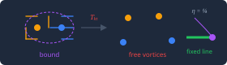
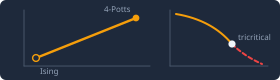
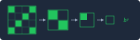

A three-part tutorial series: how a system can be critical at one point, along a whole line, or only nearly — and how an instrument that follows the renormalisation-group flow tells these apart.
Watch how fast the renormalisation-group flow moves as you change scale: it stops at one place, stops wherever it lands, slows and then leaves, or the data cannot tell.
The series is written for someone building the Criticality Compass: a DetectorThe component that reads observations of a system and returns one verdict about its critical geometry: POINT, LINE, WALKING or REFUSE. that classifies a system's critical geometry from its observations, and a NavigatorThe component that finds a critical line and moves along it, keeping the system critical while its control parameters change. that finds a critical line and moves along it. All three pages share one vocabulary:
What the Detector measures is how the flow moves as the scale and the control parameters change: how fast it goes, how much it builds up, and whether it circulates. Each page ends every section with a box like this one, saying what that section means for the Detector or the Navigator.
For a POINT, the flow near the fixed point is linear, with one relevant eigenvalue: tune the control exactly and the flow speed goes to zero; tune it slightly off and the flow leaves. For a LINE, one eigenvalue is exactly marginal (y = 0), so the flow stops on the line from a whole region of starting points. In the 2D XY model this is the Kosterlitz flow dy/dt = −xy, dx/dt = −y², which stops on the line y = 0, x > 0, and whose invariant y² − x² sorts the trajectories.1 For WALKING, the fixed points have moved off the real axis, and the flow passes close to them without stopping.3 The pages derive each of these in full.
The derivations live on the tutorial pages themselves: the Kosterlitz flow on the Kosterlitz–Thouless page, the Ashkin–Teller line and the walking Potts transition on the models page, and the linearised flow matrix with its eigenvalues on the techniques page.



Every page works the same way: each section shows a headline, one graphic and a takeaway with everything folded; the working equations and the full derivations are folded underneath; every section ends with a short quiz, and every page with a retakeable final test.
Your results on the three pages, kept in this browser. Export copies a short plain-text summary you can paste into a conversation.
Thirty items drawn from all three pages at once — names, concepts and equations (the interactive tasks stay on their pages). Each attempt draws a different set, and the best and latest scores are kept.
The people, models, methods and results of the whole series, one at a time. A name you miss comes back in the export's “names missed” list.
Scores live in this browser only: in localStorage, with a small cookie copy
(best and latest scores and which sections are mastered, under 4 KB) that can restore the
summary if the main copy is cleared. Nothing is sent anywhere. If your browser blocks site data, the
quizzes and tests still grade, and every panel says that the scores are not being saved.
Reset all scores in the scoreboard erases both copies.